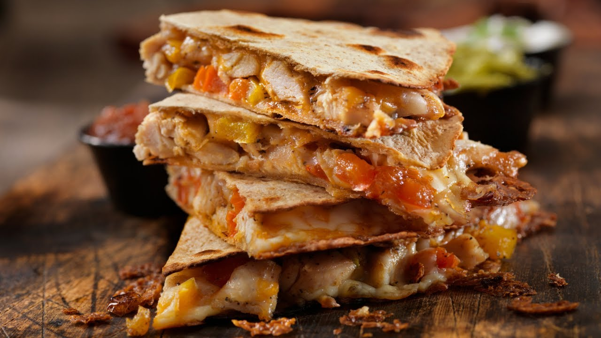

Quesadillas

Description
Quesadillas are a popular Mexican dish consisting of a tortilla (usually a flour tortilla) filled with various ingredients
such as cheese, meats (like chicken, beef, or pork), vegetables, and sometimes beans or other fillings. The tortilla is
folded in half to create a half-moon or wedge shape and is typically cooked until the cheese inside melts and the tortilla
becomes crispy and golden brown. Quesadillas are often served with sour cream, salsa, guacamole, or other condiments,
making them a delicious and versatile meal or snack enjoyed by people worldwide.
Ingredients
- Flour tortillas
- Shredded cheese (cheddar, Monterey Jack, or your preferred type)
- Cooked chicken, beef, or vegetables (optional)
- Salsa
- Sour cream
- Olive oil or cooking spray
- Sliced jalapeños (optional)
- Sliced black olives (optional)
- Chopped fresh cilantro (optional)
Steps
- If using cooked chicken, beef, or vegetables, make sure they are prepared and ready to use.
- Lay out one flour tortilla on a clean surface.
- Sprinkle a generous amount of shredded cheese evenly over half of the tortilla.
- If using additional ingredients like cooked meat or vegetables, place them on top of the cheese.
- Fold the other half of the tortilla over the filling, creating a half-moon shape.
- Heat a non-stick skillet or griddle over medium heat and lightly grease it with olive oil or cooking spray.
- Carefully transfer the filled tortilla to the skillet.
- Cook for 2-3 minutes on each side or until the quesadilla is golden brown and the cheese is melted.
You can gently press down on the quesadilla with a spatula to help it cook evenly.
- Remove the quesadilla from the skillet and place it on a cutting board.
- Allow it to cool for a minute before using a sharp knife or pizza cutter to slice it into wedges.
- Serve the quesadillas with salsa, sour cream, sliced jalapeños, sliced black olives, and chopped fresh cilantro as desired.
- Enjoy your delicious quesadillas!
Go Back Home